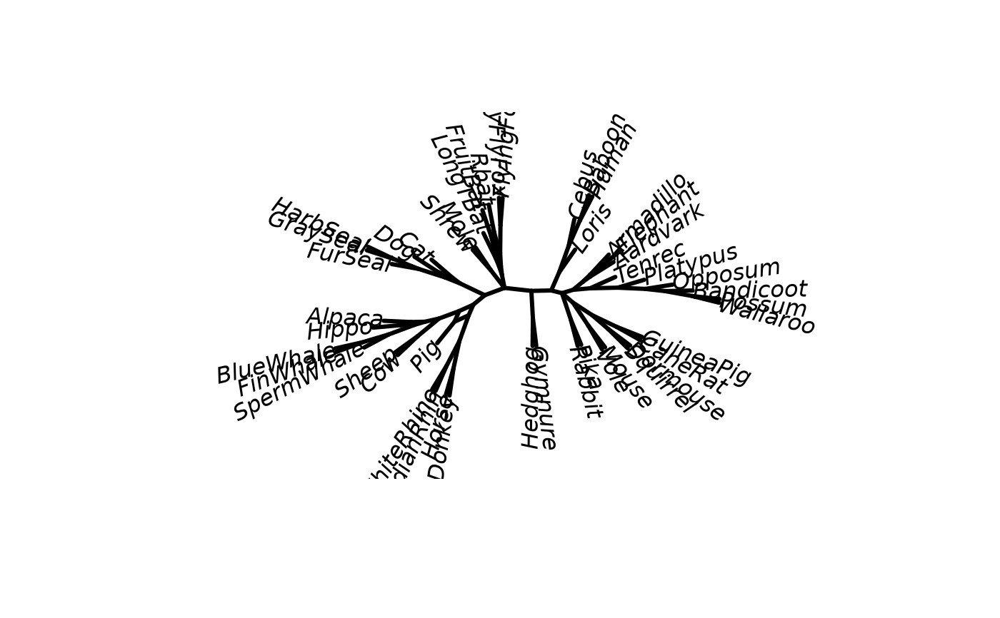

Computes a consensusNetwork from a list of trees Computes a networx object from a collection of splits.
Source: R/consensusNet.R
consensusNet.RdComputes a consensusNetwork, i.e. an object of class networx from a
list of trees, i.e. an class of class multiPhylo. Computes a
networx object from a collection of splits.
Value
consensusNet returns an object of class networx. This is
just an intermediate to plot phylogenetic networks with igraph.
References
Holland B.R., Huber K.T., Moulton V., Lockhart P.J. (2004) Using consensus networks to visualize contradictory evidence for species phylogeny. Molecular Biology and Evolution, 21, 1459–61
Author
Klaus Schliep klaus.schliep@gmail.com
Examples
data(Laurasiatherian)
set.seed(1)
bs <- bootstrap.phyDat(Laurasiatherian, FUN = function(x)nj(dist.hamming(x)),
bs=50)
cnet <- consensusNet(bs, .3)
plot(cnet, angle=-60, direction="axial")

if (FALSE) { # \dontrun{
library(rgl)
open3d()
plot(cnet, type = "3D", show.tip.label=FALSE, show.nodes=TRUE)
plot(cnet, type = "equal angle", show.edge.label=TRUE)
tmpfile <- normalizePath(system.file(
"extdata/trees/RAxML_bootstrap.woodmouse", package="phangorn"))
trees <- read.tree(tmpfile)
cnet_woodmouse <- consensusNet(trees, .3)
plot(cnet_woodmouse, type = "equal angle", show.edge.label=TRUE)
} # }